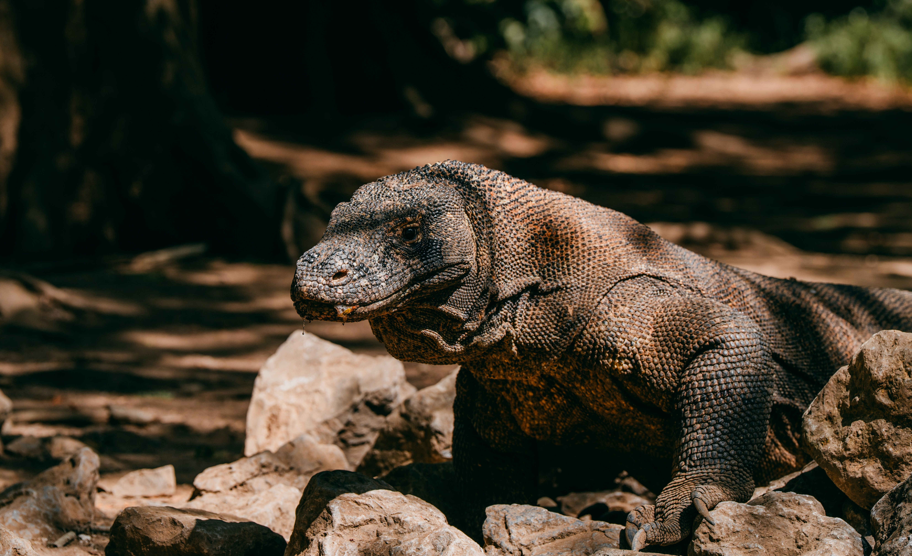
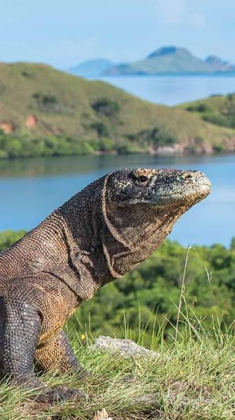
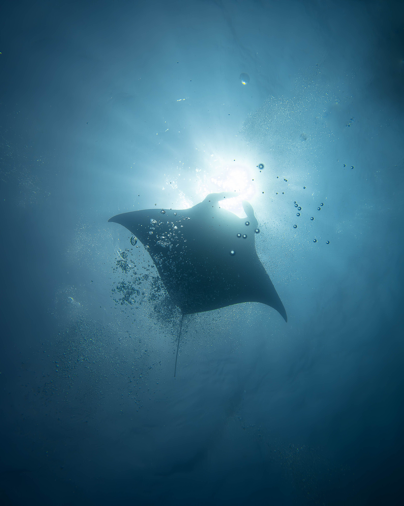

Pulau Komodo dan Rinca
Berjalan di savana ditemani ranger untuk melihat komodo dari jarak aman. Rinca punya jalur pendek yang cocok untuk keluarga.
Lihat foto satwaTaman Nasional Komodo di Nusa Tenggara Timur adalah satu-satunya tempat di dunia tempat komodo hidup liar. Di sekitarnya ada bukit savana Padar, pasir Pantai Pink, dan laut yang dihuni pari manta.

Hampir semua perjalanan menggabungkan beberapa tempat ini dalam satu atau dua hari pelayaran.

Berjalan di savana ditemani ranger untuk melihat komodo dari jarak aman. Rinca punya jalur pendek yang cocok untuk keluarga.
Lihat foto satwa
Mendaki sekitar 30–45 menit untuk melihat tiga teluk dengan warna pasir dan air yang berbeda.
Lihat bentang alam
Pasir bernuansa merah muda karena serpihan karang merah. Cocok untuk berenang dan snorkeling di air yang tenang.
Cek musim terbaik
Snorkeling bersama pari manta di lokasi yang dipandu operator berizin. Arus bisa kuat, jadi ikuti arahan pemandu.
Pilih paket snorkelingKomodo (Varanus komodoensis) adalah kadal terbesar di dunia dan satwa yang dilindungi. Pengunjung boleh melihat, tetapi tidak boleh mendekat, memberi makan, atau berjalan sendiri tanpa pemandu.
Waktu tempuh kapal berbeda tiap pulau, kira-kira 1–4 jam dari Labuan Bajo.
Topi, tabir surya, sepatu tertutup untuk trekking, air minum, dan obat mabuk laut. Savana nyaris tanpa naungan dan sinyal seluler terbatas di pulau.
Untuk memesan paket, kirim pesan ke email kami atau telepon.